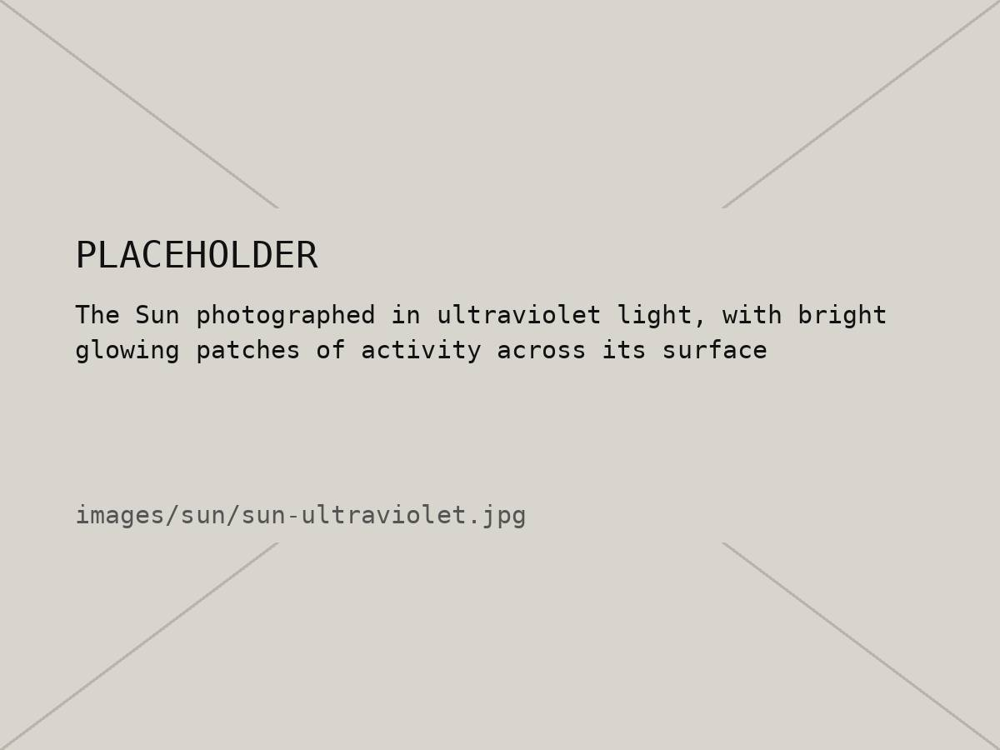
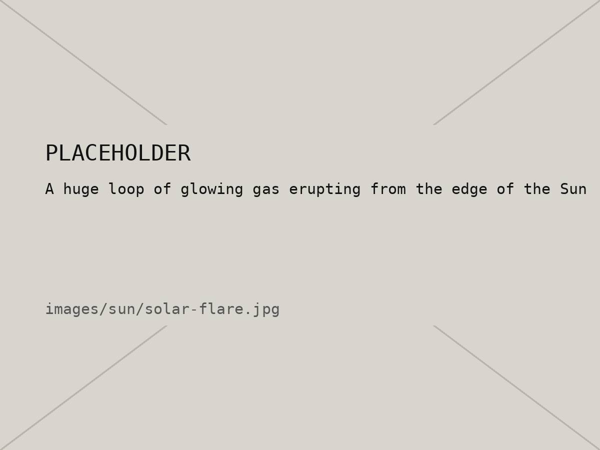

01 / 10 — Star
The Sun
A pretty average star. Still holds the whole system together.
01 — Intro
The Sun is a star: a giant ball of super hot gas, mostly hydrogen and helium. Deep in the core, hydrogen gets crushed together into helium, and that releases the energy that ends up as sunlight.
It's 109 times wider than Earth and holds about 99.8% of all the mass in the solar system, which is why everything orbits it. Compared to other stars though, it's honestly just medium-sized. The light hitting you right now left the Sun about 8 minutes ago.
02 — Quick facts
| Type | Yellow dwarf star (G-type) |
|---|---|
| Diameter | About 1.39 million km (109× Earth) |
| Distance from Earth | About 150 million km (1 AU) |
| Surface temperature | About 5,500 °C |
| Core temperature | About 15 million °C |
| Age | About 4.6 billion years |
| Light's trip to Earth | About 8 min 20 s |
03 — Images


04 — Fun facts
Six extra facts that didn't fit in the table.
Sun fact 01 / 06